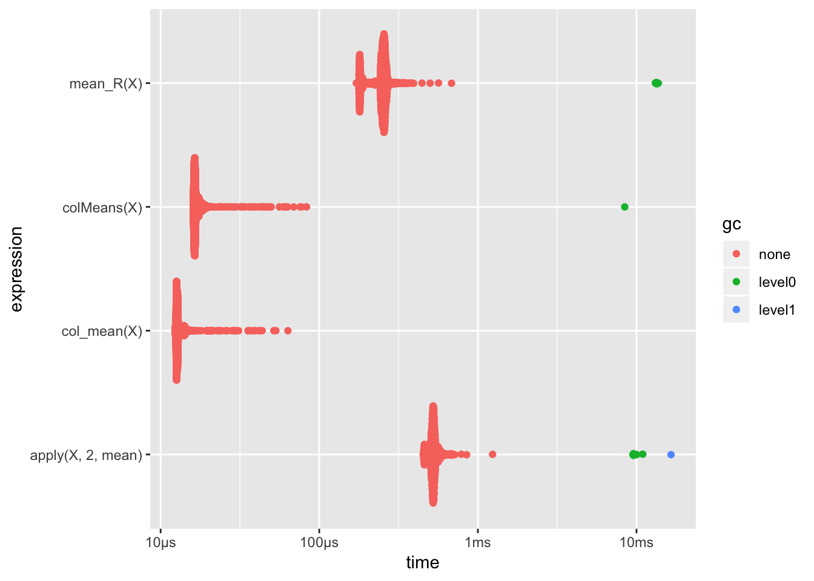

第 4 章 进阶技巧
程序的可读性和执行效率是两个很重要的要求.这一章主要介绍如何提高这两点.
4.1 apply函数族
apply并不能提高执行效率,只能使代码简洁易读.
详细的介绍可以在apply函数族介绍查看,其中给了一些简单的例子.下面演示一下稍微复杂的用法.
对矩阵按列进行操作,每列的奇数项求和,偶数项求和:
m <- matrix(1:12,4,3)
m## [,1] [,2] [,3]
## [1,] 1 5 9
## [2,] 2 6 10
## [3,] 3 7 11
## [4,] 4 8 12apply(m, 2, tapply,rep(1:2,2), sum)## [,1] [,2] [,3]
## 1 4 12 20
## 2 6 14 22对矩阵按列进行操作,每列前两项求和,后两项求和:
apply(m, 2, tapply,rep(1:2,each=2), sum)## [,1] [,2] [,3]
## 1 3 11 19
## 2 7 15 23下面看一个3维情况的例子.
a <- array(1:24,dim = c(2,3,4))
a## , , 1
##
## [,1] [,2] [,3]
## [1,] 1 3 5
## [2,] 2 4 6
##
## , , 2
##
## [,1] [,2] [,3]
## [1,] 7 9 11
## [2,] 8 10 12
##
## , , 3
##
## [,1] [,2] [,3]
## [1,] 13 15 17
## [2,] 14 16 18
##
## , , 4
##
## [,1] [,2] [,3]
## [1,] 19 21 23
## [2,] 20 22 24固定1个维度,对另外2个维度求和:
apply(a,1,sum)## [1] 144 156这样看起来不太直观,我们利用aperm函数调整数组的维度顺序:
aperm(a,c(2,3,1))## , , 1
##
## [,1] [,2] [,3] [,4]
## [1,] 1 7 13 19
## [2,] 3 9 15 21
## [3,] 5 11 17 23
##
## , , 2
##
## [,1] [,2] [,3] [,4]
## [1,] 2 8 14 20
## [2,] 4 10 16 22
## [3,] 6 12 18 24固定2个维度,对1个维度求和:
apply(a,c(2,3),sum)## [,1] [,2] [,3] [,4]
## [1,] 3 15 27 39
## [2,] 7 19 31 43
## [3,] 11 23 35 47固定2个维度,对1个维度分组求和:
apply(a,c(1,2),tapply,rep(c(-1,-2),2), sum)## , , 1
##
## [,1] [,2]
## -2 26 28
## -1 14 16
##
## , , 2
##
## [,1] [,2]
## -2 30 32
## -1 18 20
##
## , , 3
##
## [,1] [,2]
## -2 34 36
## -1 22 24对第三个维度奇数项、偶数项分别求和(奇数项是-1组,偶数项是-2组).
4.2 并行
单次模拟时间越长,重复次数越多,并行得到的提升越明显.
source("/Users/wang/Documents/GitHub/Simulation-in-R/code/parallel-demo.R")
library("foreach")
library("doParallel")
beta0 = c(1,-2,3)
N = c(50,100,200)
distribution= c(rnorm,rcauchy)
SIM = 500
tstart=Sys.time()
cl <- makeCluster(detectCores())
registerDoParallel(cl)
result <- foreach(n=N,.combine = rbind) %:%
foreach(dst=distribution,.combine = c) %:%
foreach(i=1:SIM,.combine = '+',
.packages = c("MASS") )%dopar%{
sim_single(n,beta0,SLP=FALSE,mydist = dst)
}
stopImplicitCluster()
t.end=Sys.time()
t.end-tstart## Time difference of 2.207 secsresult/SIM## [,1] [,2] [,3] [,4] [,5] [,6]
## result.1 0.9983 -2.000 3.000 0.9216 -0.9093 3.090
## result.2 0.9955 -2.002 2.995 0.6595 -1.5407 3.007
## result.3 0.9990 -2.000 3.001 1.2412 -1.7473 3.169把申请cluster的命令去掉,程序就会按串行执行
source("code/parallel-demo.R")
library("foreach")
library("doParallel")
beta0 = c(1,-2,3)
N = c(50,100,200)
distribution= c(rnorm,rcauchy)
SIM = 500
tstart=Sys.time()
#cl <- makeCluster(detectCores())
#registerDoParallel(cl)
result <- foreach(n=N,.combine = rbind) %:%
foreach(dst=distribution,.combine = c) %:%
foreach(i=1:SIM,.combine = '+',
.packages = c("MASS") )%do%{
sim_single(n,beta0,SLP=FALSE,mydist = dst)
}
#stopImplicitCluster()
t.end=Sys.time()
t.end-tstart## Time difference of 2.307 secsresult/SIM## [,1] [,2] [,3] [,4] [,5] [,6]
## result.1 0.9931 -1.992 2.989 1.74262 -2.241 11.342
## result.2 0.9983 -2.004 2.996 1.98001 -2.152 2.860
## result.3 1.0058 -2.001 2.995 -0.06368 -2.931 4.308增加到1000次.
并行:
source("/Users/wang/Documents/GitHub/Simulation-in-R/code/parallel-demo.R")
library("foreach")
library("doParallel")
beta0 = c(1,-2,3)
N = c(50,100,200)
distribution= c(rnorm,rcauchy)
SIM = 1000
tstart=Sys.time()
cl <- makeCluster(detectCores())
registerDoParallel(cl)
result <- foreach(n=N,.combine = rbind) %:%
foreach(dst=distribution,.combine = c) %:%
foreach(i=1:SIM,.combine = '+',
.packages = c("MASS") )%dopar%{
sim_single(n,beta0,SLP=FALSE,mydist = dst)
}
stopImplicitCluster()
t.end=Sys.time()
t.end-tstart## Time difference of 3.502 secsresult/SIM## [,1] [,2] [,3] [,4] [,5] [,6]
## result.1 0.9998 -1.997 2.994 -0.3434 -1.1216 3.154
## result.2 0.9954 -2.002 2.999 1.8689 -1.4982 5.298
## result.3 1.0007 -2.002 2.999 -1.1527 0.2845 2.049串行:
source("code/parallel-demo.R")
library("foreach")
library("doParallel")
beta0 = c(1,-2,3)
N = c(50,100,200)
distribution= c(rnorm,rcauchy)
SIM = 1000
tstart=Sys.time()
#cl <- makeCluster(detectCores())
#registerDoParallel(cl)
result <- foreach(n=N,.combine = rbind) %:%
foreach(dst=distribution,.combine = c) %:%
foreach(i=1:SIM,.combine = '+',
.packages = c("MASS") )%do%{
sim_single(n,beta0,SLP=FALSE,mydist = dst)
}
#stopImplicitCluster()
t.end=Sys.time()
t.end-tstart## Time difference of 4.449 secsresult/SIM## [,1] [,2] [,3] [,4] [,5] [,6]
## result.1 1.0074 -1.999 3.006 -0.553 -2.663 1.2641
## result.2 1.0008 -1.999 3.000 1.595 -2.163 3.2488
## result.3 0.9971 -1.997 3.002 3.195 -4.645 0.8559增加每次模拟的计算量,延长单次模拟的时间.
并行:
source("/Users/wang/Documents/GitHub/Simulation-in-R/code/parallel-demo.R")
library("foreach")
library("doParallel")
beta0 = c(1,-2,3)
N = c(50,100,200)
distribution= c(rnorm,rcauchy)
SIM = 500
tstart=Sys.time()
cl <- makeCluster(detectCores())
registerDoParallel(cl)
result <- foreach(n=N,.combine = rbind) %:%
foreach(dst=distribution,.combine = c) %:%
foreach(i=1:SIM,.combine = '+',
.packages = c("MASS") )%dopar%{
sim_single(n,beta0,SLP=TRUE,mydist = dst)
}
stopImplicitCluster()
t.end=Sys.time()
t.end-tstart## Time difference of 8.666 secsresult/SIM## [,1] [,2] [,3] [,4] [,5] [,6]
## result.1 0.9980 -1.995 3.001 0.6926 -2.566 2.055
## result.2 1.0029 -1.997 3.000 0.6737 -2.219 2.721
## result.3 0.9967 -1.998 3.003 4.0327 18.921 -21.664串行:
source("code/parallel-demo.R")
library("foreach")
library("doParallel")
beta0 = c(1,-2,3)
N = c(50,100,200)
distribution= c(rnorm,rcauchy)
SIM = 500
tstart=Sys.time()
#cl <- makeCluster(detectCores())
#registerDoParallel(cl)
result <- foreach(n=N,.combine = rbind) %:%
foreach(dst=distribution,.combine = c) %:%
foreach(i=1:SIM,.combine = '+',
.packages = c("MASS") )%do%{
sim_single(n,beta0,SLP=TRUE,mydist = dst)
}
#stopImplicitCluster()
t.end=Sys.time()
t.end-tstart## Time difference of 38.06 secsresult/SIM## [,1] [,2] [,3] [,4] [,5] [,6]
## result.1 0.9934 -2.014 2.992 -1.523 -4.507 3.373
## result.2 1.0101 -2.003 3.004 1.681 -2.061 4.212
## result.3 1.0010 -1.998 3.003 -2.417 4.039 5.8714.3 Rcpp
Rcpp::sourceCpp('code/Rcpp-demo.cpp')##
## > mean_R <- function(X) {
## + n = dim(X)[1]
## + m = dim(X)[2]
## + cm <- rep(0, m)
## + for (i in 1:n) {
## + cm = cm + X[i, ]
## + }
## + .... [TRUNCATED]m = 200
n = 100
X <- matrix(rnorm(m*n),m,n)
col_mean(X) -> l1
mean_R(X) -> l2
all.equal(l1,l2)## [1] TRUEcolMeans(X) -> l3
all.equal(l1,l3)## [1] TRUEapply(X, 2, mean) -> l4
all.equal(l1,l4)## [1] TRUEbench::mark(
col_mean(X),
colMeans(X),
mean_R(X),
apply(X, 2, mean),
check = FALSE,relative = TRUE
)->results
ggplot2::autoplot(results)
4.3.1 RcppParallel
C++并行库
下面是三个关于线性代数的库,https://gist.github.com/wolfv/ca3ac2b24e1daf70f85eac18ec7b1b8f 这个链接测试结果表明xtensor最快
4.3.2 RcppArmadillo
线性代数库 官方文档
4.3.3 RcppEigen
线性代数库(更快一点,但是不友好) 官方文档